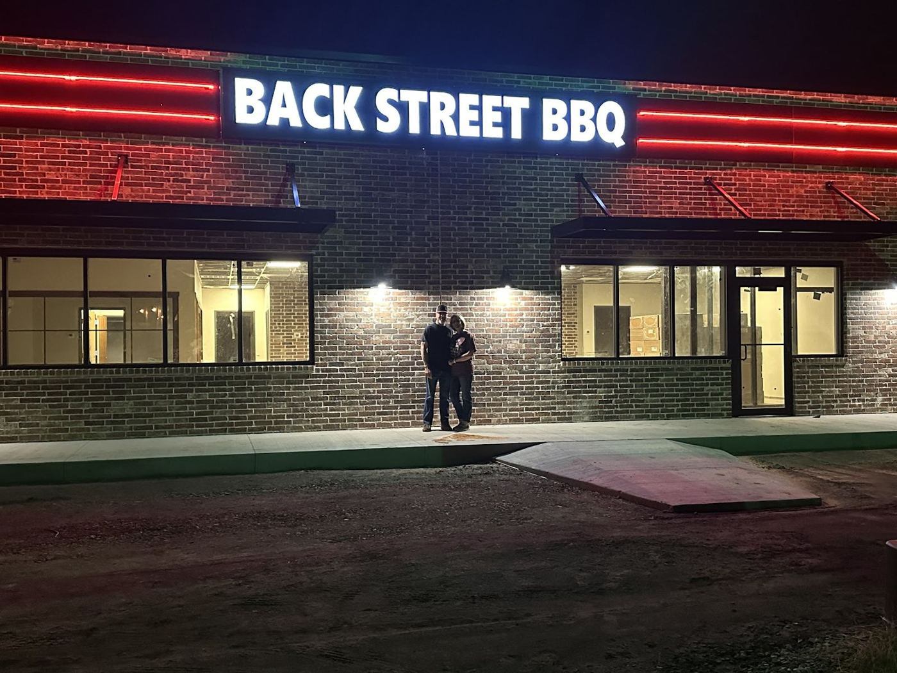
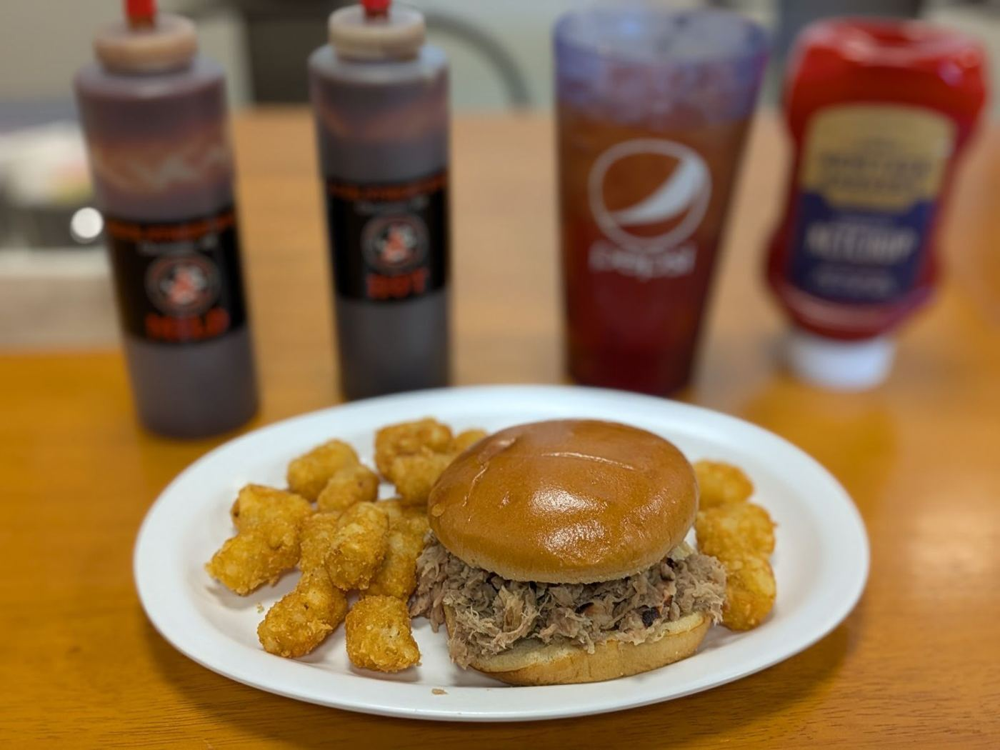
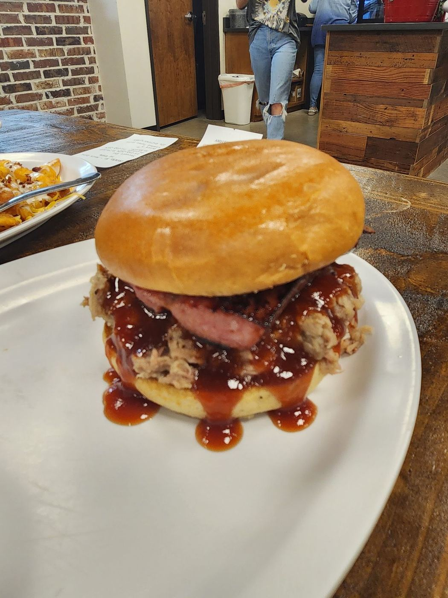
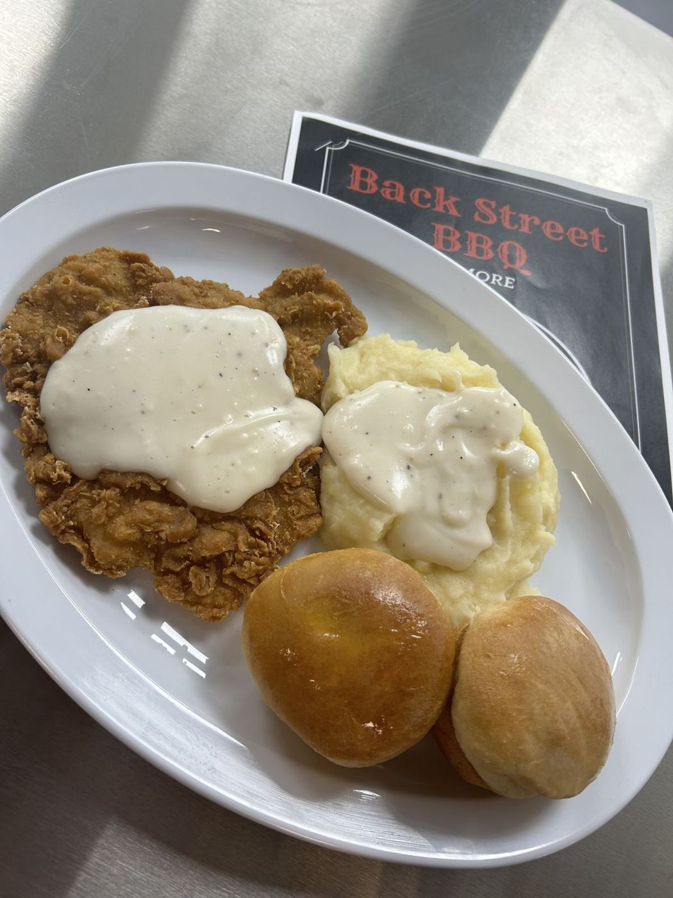
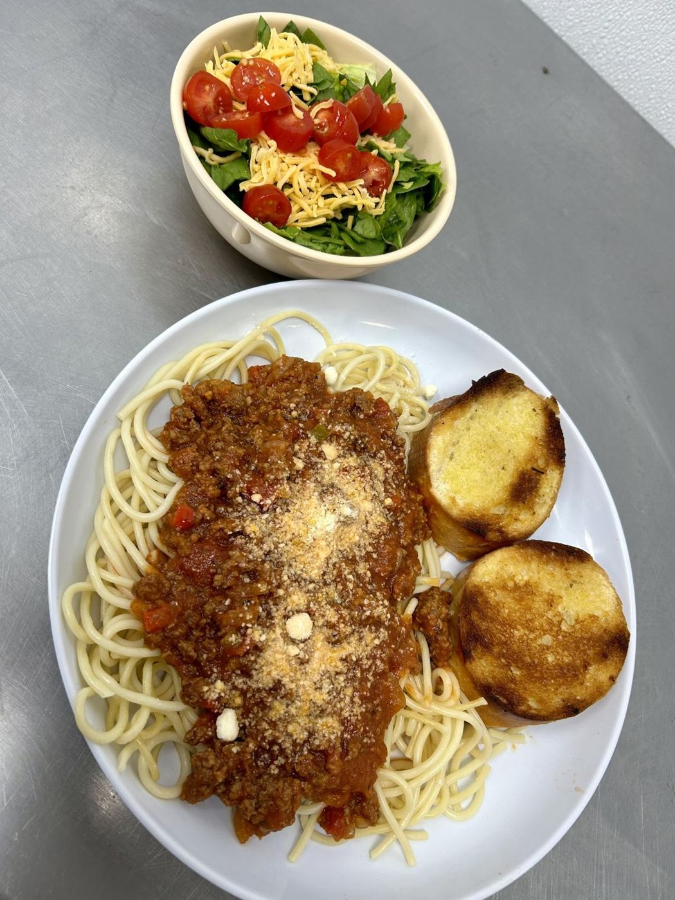
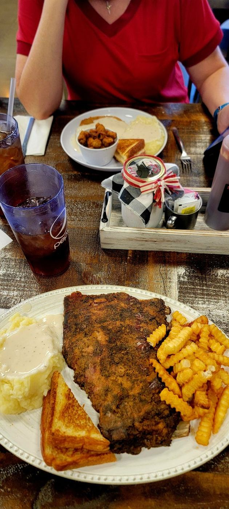
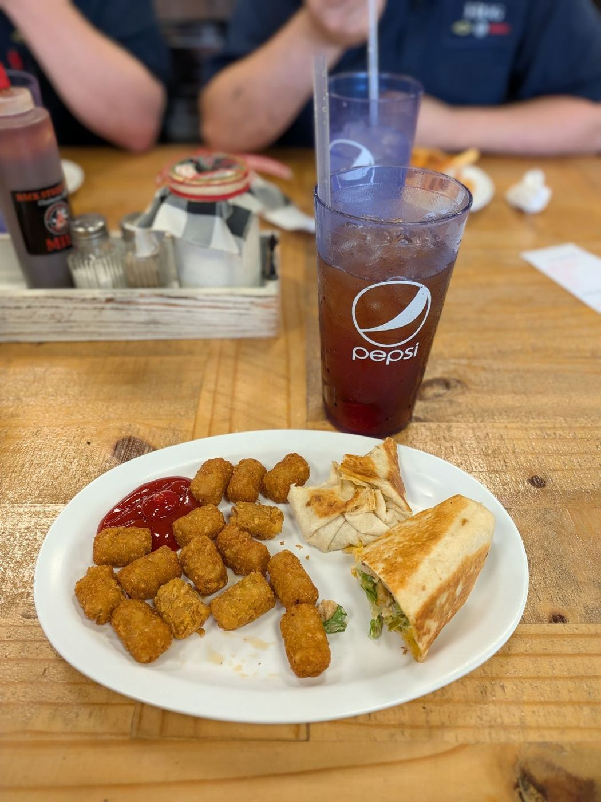

Charleston, ArkansasBack Street BBQ
Pulled pork, ribs and home cooking downtown. 4.5★ from 55 Google reviews.
Call aheadOff the pit
Swipe the plates →







The board
Pulled porkSandwiches, plates, or by the pound to go
Ribs“Excellent,” say regulars
BBQ chickenCall ahead, it sells out
SpudsLoaded baked potatoes, BBQ spud
Eye of the TigerA house specialty item
Fried okra & sidesLoaded taters, fries, home cooking
CUSTOMER RECEIPTS
4.5★ AVG · 55 GOOGLE REVIEWS
#001 ················ ★★★★★
Amazing barbecue restaurant in downtown Charleston. Regardless of how packed they are I'm always well taken care of. Plenty of awesome menu items and great tasting food. Easily my favorite restaurant for barbecue locally
Amazing barbecue restaurant in downtown Charleston. Regardless of how packed they are I'm always well taken care of. Plenty of awesome menu items and great tasting food. Easily my favorite restaurant for barbecue locally
#002 ················ ★★★★★
Fantastic barbecue! The pulled pork is amazing. The restaurant has the perfect BBQ joint vibe. And the staff are super friendly. I just tried my first Eye of the Tiger. Yum! It won't be my last!
Fantastic barbecue! The pulled pork is amazing. The restaurant has the perfect BBQ joint vibe. And the staff are super friendly. I just tried my first Eye of the Tiger. Yum! It won't be my last!
#003 ················ ★★★★★
Ribs were excellent as were the sides, I had the loaded baked potato and fried okra. The server was very nice and very good at her job 5 Stars service all the way!! Also spoke with the owner who was super nice too. Friendly place with fair prices and good home cooking!!
Ribs were excellent as were the sides, I had the loaded baked potato and fried okra. The server was very nice and very good at her job 5 Stars service all the way!! Also spoke with the owner who was super nice too. Friendly place with fair prices and good home cooking!!